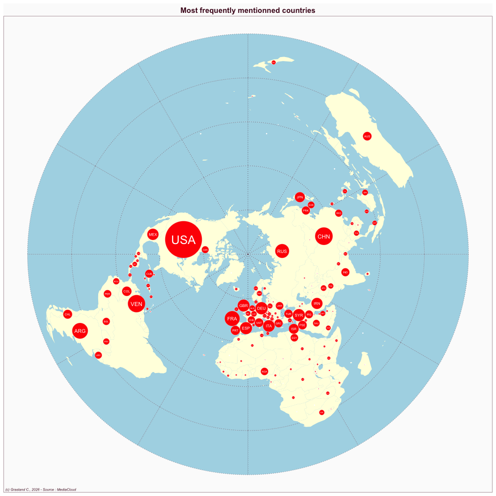

Brazil
- Website : O Globo
Scale
- Global
- National
Topics
- General news
- Political news
- Economic news
Publications
CHEN X. 2025. News framings of o globo regarding chinese society during the covid-19 pandemic. Brazilian Journalism Research 21: E1716